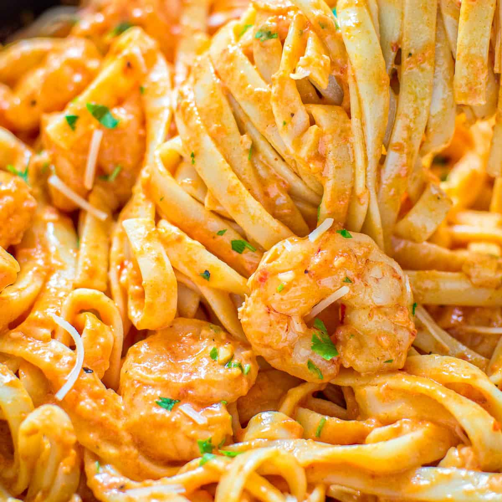

Shrimp Fettucine

Grilled shrimp with fettucine pasta and roasted red pepper sauce
This scrumptious seafood dish is sure to wow your dinner guests! The recipe can be broken down into three steps: the pasta, the shrimp, and the sauce. Thinking about the recipe this way makes it easier when it comes time to cook!!
Another great thing about this dish is that you can substitute your favorite pasta! I prefer fettucine, but feel free to use penne or ravioli instead! I recommend a longer noodle like tagliatelle or pappardelle.
Ingredients
- 2 lb shrimp
- 16 oz fettucine pasta
- 32 oz. jar roasted bell peppers
- 6 tbsp unsalted butter
- 6 cloves garlic, minced
- 1 tbsp paprika
- 1 tsp red pepper flakes
- 1 1/2 cup half & half
- 1 cup grated parmesan cheese
- 1/2 tsp black pepper
- 1 tsp salt
Steps
- Bring a large pot of water to boil and cook the fettucine according to the instructions. Sprinkle a few pinches of salt into the water before adding the pasta. Drain and set aside after the pasta finishes boiling.
- Place the roasted peppers together with the liquid from the jar into a food processor or blender and puree until smooth.
- Peel and devein the shrimp.
- Heat a non-stick pan over high heat. Let the pan heat 2-3 minutes, and add butter, shrimp, paprika, and red pepper flakes. Cook for 3-4 minutes, then add salt and garlic, and cook for 1 more minute.
- Reduce the heat to low and remove the shrimp from the pan. To the same pan, add the pureed roasted pepper. Cook for 10 minutes, stirring often.
- Add half & half and parmesan, and cook for 1 more minute.
- Turn off the heat, and return the shrimp to the pan along with the fettucine. Mix well, and pour into a serving bowl.
- Enjoy!